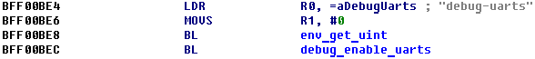
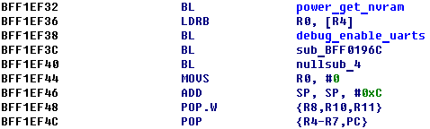
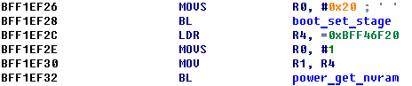
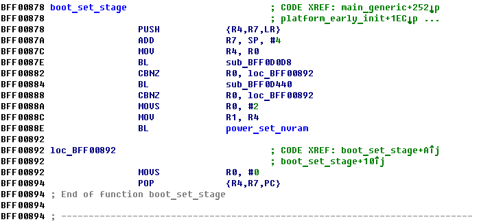
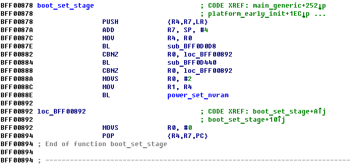
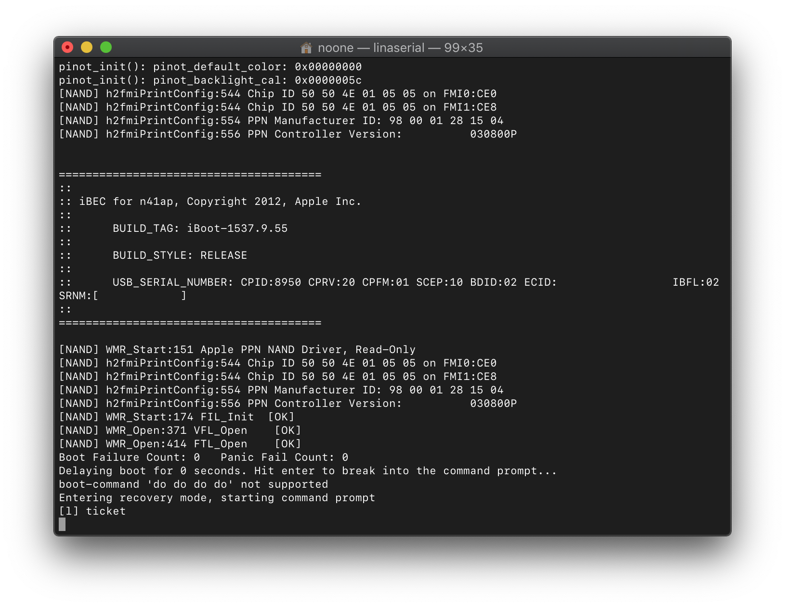
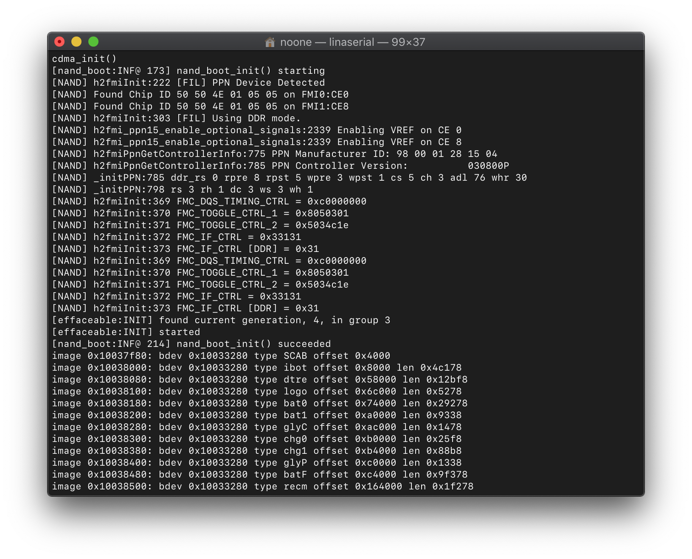

Accessing Power NVRAM
Created on 30.08.19
The information about what Power NVRAM is and why we would want to access it is available here, in my Twitter thread released few weeks ago:
This is just a guide about accessing it. In the end you'll be able to achieve this:
Here is my little thread about Power NVRAM — another persistent key-value storage, located right on PMU chip. Only talking about iBoot context pic.twitter.com/T8lKhYT2gL
— Lisa Braun (@nyan_satan) August 17, 2019
This is just a guide about accessing it. In the end you'll be able to achieve this:
Managed to enable debug-uarts on every kind of iBoot without any patches, so it works even with signed bootchain https://t.co/g6G5VgDrVk pic.twitter.com/xqaV9ehvKW
— Lisa Braun (@nyan_satan) July 31, 2019
The synopsys
We'll use 2 functions embedded in iBoot (only talking about 2nd-stage) - power_get_nvram() and power_set_nvram() which get and set Power NVRAM variables respectively. We'll locate the functions in iBoot image (iOS 6.1.3 one in this example) and then call them using Lina - my iBoot payload which allows calling arbitrary functions (and many more things!)Finding power_get_nvram()
The function's prototype:
int power_get_nvram(u_int8_t key, u_int8_t *data);
First find where debug-uarts string is loaded:

It's used as first argument for env_get_uint(). This function is used to retrieve debug-uarts value from env/NVRAM. The result of that function is then passed to debug_enable_uarts()
It's used as first argument for env_get_uint(). This function is used to retrieve debug-uarts value from env/NVRAM. The result of that function is then passed to debug_enable_uarts()
debug_enable_uarts() is called twice. First in platform_early_init() and then in main_generic() (where we just found it). Find its call in platform_early_init():

The first call before debug_enable_uarts()'s call is the call to power_get_nvram()
The first call before debug_enable_uarts()'s call is the call to power_get_nvram()
Finding power_set_nvram()
The function's prototype:
int power_set_nvram(u_int8_t key, u_int8_t data);
Even earlier there's a boot_set_stage() call:

Last function called in boot_set_stage() is power_set_nvram(): 
Last function called in boot_set_stage() is power_set_nvram(): 
Making use of the functions
First, patch iOS 6 (3, 4, 5, 7, 8 should work too, but iOS 6.1 iBoot is the best for Lina's embedded offset resolver) iBoot to point ticket command to load address:
iboot32patcher iBoot iBoot.patched -c ticket 0x80000000
Load this iBoot. Send Lina to load address. Send ticket command. You should see something like this in the end of a serial log:  Now, commands to Lina must start with lina instead of ticket. For example, let's set iBootDebug key to 0x1 using power_set_nvram() (don't forget to add 1 to function pointers as these are Thumb ones):
Lina's function's syntax:
lina function pointer [arg1, arg2, arg3, arg4]
[l] lina function 0xBFF0D3D1 0x1 0x1
returned: 0x0
[l] lina function 0xBFF0D361 0x1 0x80000000
returned: 0x0
[l] lina mdb 0x80000000 0x1
0x80000000: 01
Seems correct. Let's reboot device and check for additional output:
